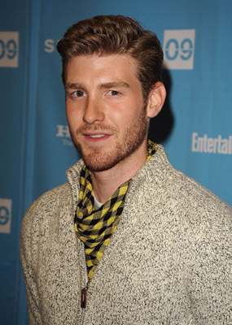

#1998 Thirteen Days


 IMDB-Wertung: 7.3 / 10
IMDB-Wertung: 7.3 / 10  Metascore: 67
Metascore: 67 
Im Oktober 1962 ist der Kalte Krieg auf seinem Höhepunkt. Als die Amerikaner mitbekommen, dass die Sowjets Mittelstreckenraketen in Kuba stationieren wollen, kommt es zur Eskalation des politischen Streits. Präsident John F. Kennedy (Bruce Greenwood) muss handeln, will aber seine demokratischen Ideale nicht aufgeben. Sein Militär, das ihm zutiefst misstraut und ihn für zu weich hält, will die Raketen bei einem überraschenden Flugangriff zerstören und anschließend eine Invasion auf Kuba starten. Und das Desaster der Schweinebucht-Affäre peinigt das Selbstvertrauen der US-Geheimdienste noch immer. Nur seinem Bruder Robert (Steven Culp) und Berater Kenneth O’Donnell (Kevin Costner) kann JFK wirklich vertrauen...
Jahr: 2000
Dauer: 145 Minuten
FSK: 12
Land: USA Studio: New Line CinemaTonspuren: DTS - ,
Untertitel: Deutsch,
Auflösung: 1080p (1920x1040) Größe: 15564 MB
Genre: Drama, Geschichte, Thriller
Regisseur: Roger Donaldson
Drehbuch: David Self, Ernest R. May, Philip D. Zelikow
Soundtrack: Trevor Jones
Darsteller:
- Shawn Driscoll als U-2 Pilot
 Kevin Costner als Kenny O'Donnell
Kevin Costner als Kenny O'Donnell Lucinda Jenney als Helen O'Donnell
Lucinda Jenney als Helen O'Donnell Caitlin Wachs als Kathy O'Donnell
Caitlin Wachs als Kathy O'Donnell-  Jon Foster als Kenny O'Donnell, Jr.
 Bruce Thomas als Floyd
Bruce Thomas als Floyd- Stephanie Romanov als Jacqueline Kennedy
 Bruce Greenwood als John F. Kennedy
Bruce Greenwood als John F. Kennedy Frank Wood als McGeorge Bundy
Frank Wood als McGeorge Bundy Dakin Matthews als Arthur Lundahl
Dakin Matthews als Arthur Lundahl- Colette O'Connell als Kenny's Assistant #2
- Karen Ludwig als Operator Margaret
- Audrey Rapoport als White House Operator #1
 Steven Culp als Robert F. Kennedy
Steven Culp als Robert F. Kennedy Dylan Baker als Robert McNamara
Dylan Baker als Robert McNamara Bill Smitrovich als Gen. Maxwell Taylor
Bill Smitrovich als Gen. Maxwell Taylor- Henry Strozier als Dean Rusk
 Ed Lauter als Gen. Marshall Carter
Ed Lauter als Gen. Marshall Carter- Michael Fairman als Adlai Stevenson
 James Karen als George Ball
James Karen als George Ball Len Cariou als Dean Acheson
Len Cariou als Dean Acheson Peter White als John McCone
Peter White als John McCone Kevin Conway als Gen. Curtis LeMay
Kevin Conway als Gen. Curtis LeMay Olek Krupa als Andrei Gromyko
Olek Krupa als Andrei Gromyko Elya Baskin als Anotoly Dobrinyn
Elya Baskin als Anotoly Dobrinyn Jack McGee als Richard J. Daley
Jack McGee als Richard J. Daley John Aylward als Orville Dryfoos
John Aylward als Orville Dryfoos Madison Mason als Adm. George Anderson
Madison Mason als Adm. George Anderson Christopher Lawford als Cmdr. William B. Ecker
Christopher Lawford als Cmdr. William B. Ecker- David O'Donnell als Lt. Bruce Wilhemy
- Benjamin Koldyke als RF-8 Pilot
 Alan Francis als Executive Officer of USS Pierce
Alan Francis als Executive Officer of USS Pierce Michael Gaston als Captain of USS Pierce
Michael Gaston als Captain of USS Pierce- Chris Henry Coffey als Officer of Destroyer
 Oleg Vidov als Valerian Zorin
Oleg Vidov als Valerian Zorin- Zitto Kazann als Chilean Delegate
 Alex Veadov als Radio Room Operator #3
Alex Veadov als Radio Room Operator #3 Jack Blessing als John Scali
Jack Blessing als John Scali Tom Everett als Walter Sheridan
Tom Everett als Walter Sheridan Karl Makinen als Young FBI Agent
Karl Makinen als Young FBI Agent Boris Lee Krutonog als Alexander Fomin
Boris Lee Krutonog als Alexander Fomin- Charles Esten als Maj. Rudolph Anderson
 Allan Graf als Football Referee
Allan Graf als Football Referee Walter Cronkite als Himself , archive footage, uncredited
Walter Cronkite als Himself , archive footage, uncredited Ryder Davis als Boy Scout , uncredited
Ryder Davis als Boy Scout , uncredited Armen Garo als Crewman on Freighter , uncredited
Armen Garo als Crewman on Freighter , uncredited Gilley Grey als Air Force Pilot , uncredited
Gilley Grey als Air Force Pilot , uncredited Phil Hawn als UN Administrator , uncredited
Phil Hawn als UN Administrator , uncredited Rick Kain als Carpenter , uncredited
Rick Kain als Carpenter , uncredited John F. Kennedy als Himself , archive footage, uncredited
John F. Kennedy als Himself , archive footage, uncredited
Datei: X:\2000\Thirteen Days (2000, FSK12, 1920x1040).mkv seit 21.09.2015
Festplatte: HD 1996-2002
 Es gibt insgesamt 82 Filme in der Gruppe '2000'
Es gibt insgesamt 82 Filme in der Gruppe '2000'